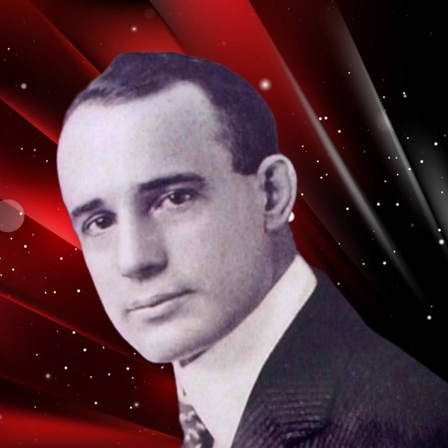

Homepage
Email
Israq's Library
Select your author
Thibaut Meurisse
Thibaut Meurisse is a self improvement book writer. He wrote a lot of books regarding self improvement.
Read Books
Stephen Covey
Stephen Richards Covey (October 24, 1932 – July 16, 2012) was an American educator, author, businessman, and speaker. His most popular book is The 7 Habits of Highly Effective People. His other books include First Things First, Principle-Centered Leadership, The 7 Habits of Highly Effective Families, The 8th Habit, and The Leader In Me: How Schools and Parents Around the World Are Inspiring Greatness, One Child at a Time. In 1996, Time magazine named him one of the 25 most influential people. He was a professor at the Jon M. Huntsman School of Business at Utah State University (USU) at the time of his death.
Read Books
Hakeemul Ummat Maulana James Clear
James Clear (born 1986) is an American writer.[1] He is best known for his book Atomic Habits
Read Books

Napoleon Hill
Oliver Napoleon Hill (October 26, 1883 – November 8, 1970) was an American self-help author and conman. He is best known for his book Think and Grow Rich (1937), which is among the best-selling self-help books of all time. Hill's works insisted that fervid expectations are essential to improving one's life. Most of his books were promoted as expounding principles to achieve "success".
Read Books
Dr. Zakir Naik
Jen Sincero was born and raised in Westchester, New York. The daughter of Italian-born Domenico Sincero, a doctor, and Susan Sincero, she attended Briarcliff High School and later Colorado College, where she graduated in 1987 with a BA in English. Sincero worked in the marketing department at CBS/Epic Records in the 1990s during which time she co-founded her first band, Crotch, Sincero moved to Albuquerque, New Mexico, in 1996, where she started the Jenny Clinkscales Band and later 60 Foot Queenie, a solo project.
Read Books
William Harry McRaven
William Harry McRaven (born November 6, 1955) is a retired United States Navy four-star admiral who served as the ninth commander of the United States Special Operations Command (SOCOM) from August 8, 2011 to August 28, 2014. From 2015 to 2018, he was the chancellor of The University of Texas System.
Read Books
Charles Duhigg
Charles Duhigg (born 1974) is an American journalist and non-fiction author. He was a reporter for The New York Times, currently writes for The New Yorker Magazine and is the author of two books on habits and productivity, titled The Power of Habit: Why We Do What We Do in Life and Business and Smarter Faster Better. In 2013, Duhigg was the recipient of the Pulitzer Prize for Explanatory Reporting for a series of 10 articles on the business practices of Apple and other technology companies.
Read Books
Mel Robbins
Melanie Robbins (née Schneeberger; born October 6, 1968) is an American podcast host, author, motivational speaker, and former lawyer. She is known for her TEDx talk, "How to Stop Screwing Yourself Over"; and her books, The 5 Second Rule and The High 5 Habit, as well as host of The Mel Robbins Podcast.
Read Books